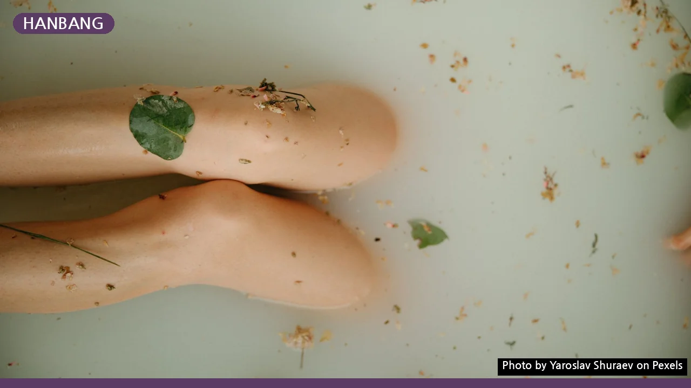
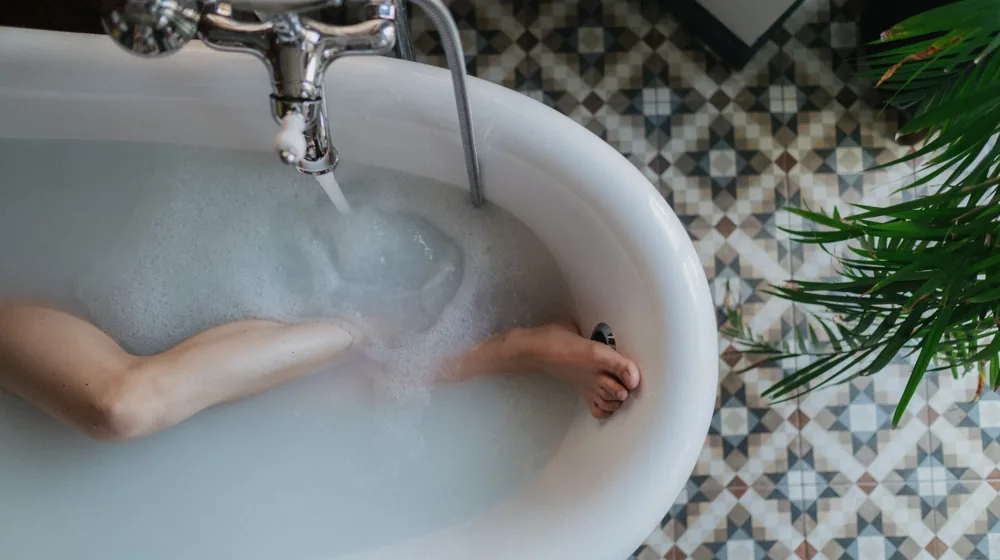
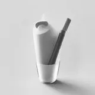

한방 족욕·입욕 센터 고르는 법, 실패 없는 4가지 체크리스트
사진: Yaroslav Shuraev / Pexels (무료 이미지, 출처 표기)
내 몸에 맞는 한방 족욕·입욕, 왜 신중하게 골라야 할까?

추운 날씨나 누적된 피로를 풀기 위해 한방 족욕이나 입욕을 찾는 이들이 늘고 있습니다. 하지만 따뜻한 물에 단순히 시판 입욕제만 푸는 수준의 서비스를 제공하는 곳도 많아 소비자의 현명한 선택이 필요합니다.
체질을 고려하지 않은 무분별한 약재 사용은 피부 트러블이나 어지럼증을 유발할 수 있습니다. 몸의 순환을 돕고 진정한 휴식을 얻기 위해서는 전문성을 갖춘 웰니스 센터를 선별해야 합니다.
실패 없는 한방 웰니스 센터 선택 기준 4가지
첫째, 개인 맞춤형 상담을 제공하는지 확인해야 합니다. 사상체질(사람의 체질을 태양인·태음인·소양인·소음인 네 가지로 나누어 분석하는 한의학 이론)에 맞춰 개별 약재를 제안하는 곳이 좋습니다.
둘째, 위생 및 수질 관리입니다. 여럿이 함께 쓰는 공간인 만큼 살균 여과 시스템을 갖추었는지, 1인 1욕조 물 교체를 원칙으로 하는지 공식 홈페이지나 이용 후기를 통해 확인하세요.
셋째, 전문 테라피스트 상주 여부입니다. 단순 아르바이트생이 아닌 한방 테라피 자격이나 관련 수료증을 보유한 전문가가 상주하는 곳이어야 안전합니다.
넷째, 천연 한약재 사용 여부를 확인하세요. 인공 향료나 타르 색소를 섞은 가짜 입욕제가 아닌, 실제 한약재를 달여 추출한 원액을 사용하는 곳인지 문의하는 것이 좋습니다.
대표적인 한방 약재별 효능과 추천 체질
내 체질에 맞는 약재를 미리 알고 가면 센터 선택과 상담 시 큰 도움이 됩니다. 한국관광공사 추천 웰니스 관광지 가이드라인을 참고하여 대중적인 약재 정보를 정리했습니다.
방문 전 꼭 확인해야 할 안전 체크리스트
건강을 위한 웰니스 테라피가 오히려 독이 되지 않으려면 아래 항목들을 방문 전에 꼼꼼히 체크해 보시길 권장합니다.
- 1인 욕조 사용 여부: 다인용 족욕탕보다 개별 위생이 보장되는 1인 욕조를 운영하는지 확인합니다.
- 적정 온도 조절 장치: 족욕은 38~40도, 입욕은 36~38도가 적당하며 개인별로 온도를 미세 조절할 수 있는지 확인합니다.
- 비상 알림 시스템: 입욕 중 저혈압이나 어지럼증 발생 시 즉시 직원을 부를 수 있는 벨이 욕실 내에 있는지 체크합니다.
- 한방차 서비스 연계: 입욕 전후 손실된 수분을 보충할 수 있도록 체질에 맞는 따뜻한 한방차를 제공하는지 확인합니다.
이용 시 주의사항 및 효과 극대화하는 방법
한방 족욕은 보통 15분에서 20분 내외가 적당하며, 전신 입욕은 20분을 넘기지 않는 것이 좋습니다. 지나치게 오래 몸을 담그면 오히려 체수분이 과도하게 빠져나가 탈수 증상이 일어날 수 있습니다.
특히 고혈압, 당뇨, 심혈관 질환이 있거나 임산부의 경우에는 장시간 온탕 입욕이 위험할 수 있으므로 반드시 사전에 의사와 상의해야 합니다. 이용 중 땀이 과도하게 나거나 머리가 띵하다면 즉시 탕에서 나와 미지근한 물을 마시며 휴식을 취해야 합니다.
체질 판단이나 치료 목적의 처방은 단순 웰니스 센터의 조언에만 의존하기보다, 한의원 등 전문 의료기관의 진단을 바탕으로 진행하는 것이 가장 안전합니다.
🔗 이 글도 함께 보면 좋아요: 노트북 고를 때 후회 없는 4가지 핵심 사양 용어 체크리스트
관련 추천 상품
이 포스팅은 쿠팡 파트너스 활동의 일환으로, 이에 따른 일정액의 수수료를 제공받습니다.
한눈에 보는 상품 목록

한방 천연 족욕제
편백나무 가정용 족욕기